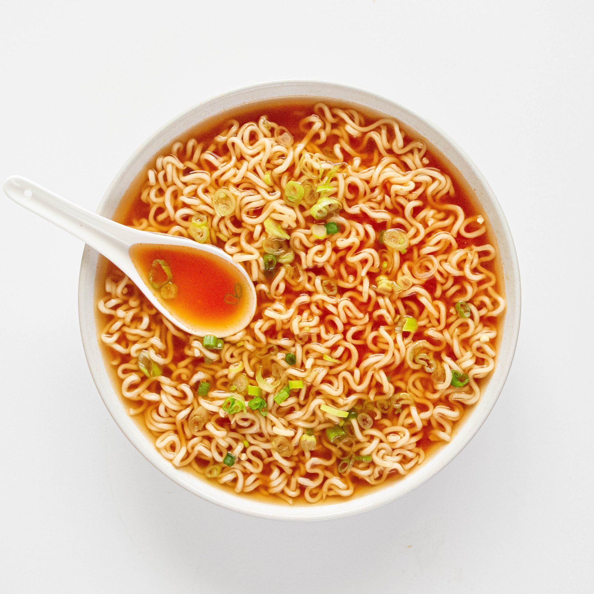

Top Ramen

Description:
A classic soup to feed your soul. This dish comes in many flavors. My personal suggestion is Chicken.
Pro-Tip:
Doctoring up the broth with some cabinet herbs is a nice change of pace.
Ingredients:
- 6 - Cups of Water
- 1 - Package of Top Ramen
Instructions:
- Bring water to a boil.
- Add Ramen noodles to water.
- Cook for 3 mins.
- Strain water into a bowl for the broth.
- Add flavor packet to the water and stir in noodles.
- Let cool for 2 minutes and begin slurping.
Home